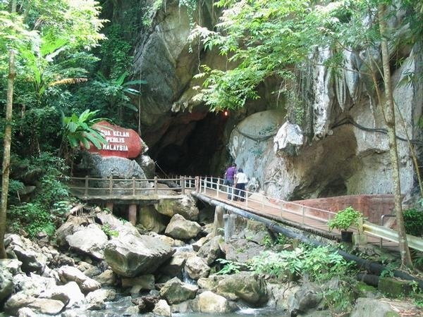
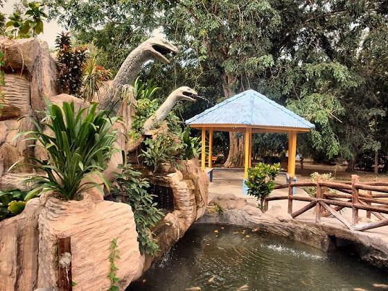
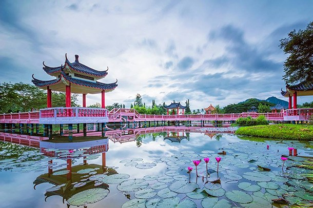
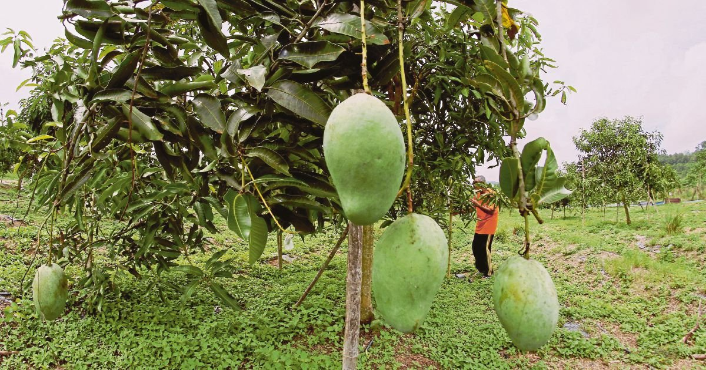
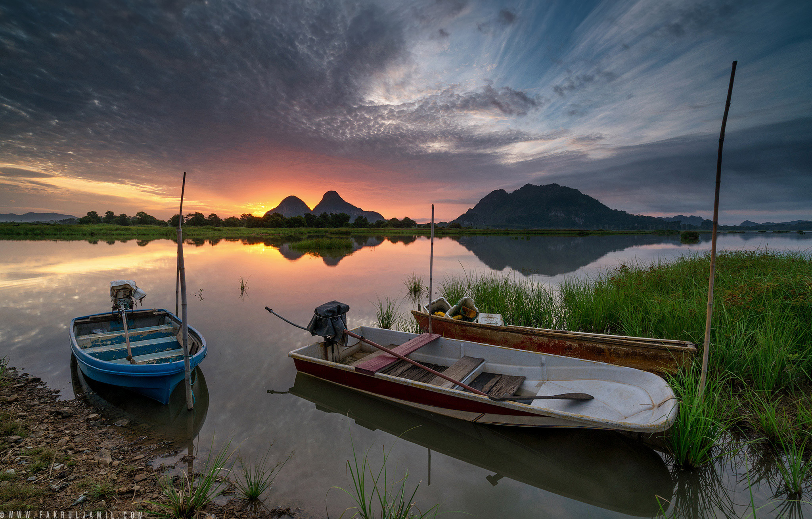

The smallest and northernmost state in Malaysia hardly gets any visitors. The Malay-Thai border sits about 40 kilometres (25 miles) north of tiny state capital Kangar. But despite its size and tourists’ lack of interest, Perlis packs an intriguing punch: A raja, not a sultan, rules over Perlis. This fascinating technicality dates back to the 19th century, when Perlis became part of Siam, which instated a king. Despite the Malay royal bloodline, the king became a raja because another sultan didn’t explicitly bestow him. Spend two days in Perlis, where Culture Trip recommends visiting the Arau (royal capital) and Masjid Terapung Al-Hussain floating mosque. Limestone caves penetrate many of the surrounding hills, offering countless spelunking opportunities with guided tours.

Gua Kelam
Gua Kelam is one of limestone's cave in the Setul Formation in Nakawan Range and was maintained by Perlis Forestry Department since 1997.
Address: Kaki Bukit, 02200 Kaki Bukit, Perlis

Snake & Reptile Farm
The Snake & Reptile Farm in Sungai Batu Pahat, Perlis, is one of the few tourist attractions in this northernmost state in Malaysia. The farm holds more than 300 snakes from 30 different species.
Address: Sungai Batu Pahat, Perlis, 01000, Kangar, Perlis, 01000

Tasik Melati
Tasik Melati is a natural wetland within development area. The park is famous for its lakes and its recreational facilities. Melati Lake derives its name from the fragrant Jasmine flower. It could probably adapted Melati from the adjacent housing estate called Taman Melati.
Address: Taman Melati, 02400 Kangar, Perlis

Ladang Mangga Harum Manis Azhar Ad'ha
It's a well-known manggo farm where you'll be able to go around and lookhow they grow it.3KG of Manggo for RM98, which we can make online order.
Address: Kampung Belukar, 01000 Kangar, Perlis

Tasik Timah-Tasoh
Tasik Timah-Tasoh was built in 1992 with a cost of RM67 million and supplies water to the people of Perlis as well as prevents any occurrence of flood in the state of Perlis.